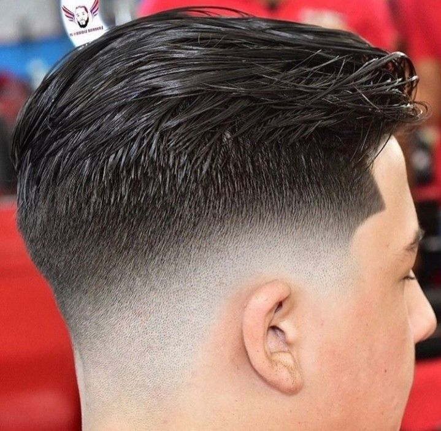

Somos The Wolves
Nacimos del SENA con una visión clara: traer una barbería de excelencia a Ciudad Verde, Soacha. Somos jóvenes, somos aprendices, somos emprendedores. Y no vamos a parar hasta lograrlo.
La Historia de The Wolves
Todo comienza con una idea, y la nuestra nació en 2025 en los pasillos del SENA: crear una barbería que no fuera simplemente un lugar donde cortan cabello, sino un espacio donde la disciplina, el arte y el emprendimiento se unen en cada navajada.
The Wolves Barber es un proyecto de emprendimiento formativo que se está construyendo desde cero, con las manos, el esfuerzo y la pasión de jóvenes aprendices comprometidos con hacer las cosas bien. Nuestro hogar está en Ciudad Verde, Soacha — un municipio que merece lo mejor, y nosotros venimos a dárselo.
Cada semana avanzamos un poco más. Cada corte practicado, cada técnica aprendida, cada detalle pulido es un ladrillo más en la construcción de este sueño. No tenemos décadas de historia todavía, pero sí tenemos algo que vale más: el hambre de crecer y la determinación de no parar hasta lograrlo.
Creemos que la excelencia no espera a tener recursos infinitos. La excelencia se construye con lo que tienes, donde estás, junto a las personas correctas. Y eso es exactamente lo que estamos haciendo: levantando a The Wolves Barber, paso a paso, tijera a tijera, con orgullo de ser SENA y orgullo de ser de Soacha.
— En construcción. En marcha. Sin parar. 🐺
Reservar Cita →
Línea del Tiempo
La Chispa Inicial
Nace la idea en el SENA: un grupo de aprendices con visión decide que Soacha merece una barbería de verdad. The Wolves Barber comienza a tomar forma.
El Equipo se Forma
Los Wolves se consolidan: Leonardo, Albeiro, Johan y Carlos se unen con un objetivo común. Cuatro personalidades, una sola misión: la excelencia.
Ciudad Verde, Nuestro Territorio
Elegimos Ciudad Verde, Soacha, como nuestro hogar. Una comunidad vibrante que merece un espacio premium donde sentirse bien.
Construcción en Marcha
Cada día avanzamos: técnica, espacio, identidad. Estamos puliendo cada detalle para abrir nuestras puertas con todo lo que prometemos.
El Gran Lanzamiento
Cuando abramos, no será solo una barbería — será una declaración. The Wolves Barber: donde el talento SENA se convierte en leyenda.
Nuestros Valores
Precisión Absoluta
No aceptamos "casi bien". Cada línea, cada degradado, cada detalle es trabajado hasta que sea perfecto. La mediocridad no tiene lugar aquí.
Respeto y Confianza
Tu cabeza en nuestras manos es un acto de confianza. Lo tomamos en serio. Te escuchamos, te asesoramos y siempre entregamos más de lo prometido.
Tradición con Visión
Respetamos las raíces de la barbería clásica pero no le tenemos miedo al futuro. Combinamos técnicas ancestrales con tendencias modernas.